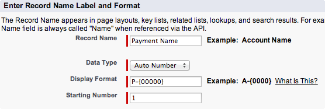

Grouping messages under a common business identifier
The objective of this tutorial is to demonstrate the grouping of related messages under a common
business identifier.
Related Messages
Consider a Supplier Invoice that must be paid via a Funds Transfer
Instruction. The Supplier Invoice and the Funds Transfer Instruction are two
separate source documents generated on different systems. Both documents are however
related by the payment process and therefore require grouping under a common business
identifier.
Common Business Identifier
An internal Salesforce ID such as 066b0000001RJct may not be useful from an
end user perspective. An identifier such as INVOICE-123 or
PMT2345 conveys useful meaning and is therefore a better choice for a
common business identifier.
Business identifiers naturally vary on a case by case basis. It is for this reason that
the framework enables the system configurator to define what part of structured data
will act as the common identifier across disparate source documents.
Expected duration: 15 minutes.
Scenario
We will model:
the receipt of a Purchase Invoice,
the payment of that Purchase Invoice using a Funds Transfer Instruction,
the relationship between these two documents using their respective business references,
To achieve this, we will:
create two custom objects: PurchaseInvoice__c and Payment__c,
create a custom Pay Invoice service that simulates the payment of supplier
invoices,
use the Audit Initializer and Audit Writer processes to
relate the Purchase Invoice Reference (PurchaseInvoice__c.PurchaseRef__c) and
the Payment Reference (Payment__c.PaymentRef__c).
Prerequisites:
The creation of custom objects and processes will normally be carried out by the developer(s) in
your organisation.
Create the Purchase Invoice object with a Reference field.
Click Setup > Create > Objects > New Custom Object
Name the object PurchaseInvoice
Make sure it has a Auto Number Name field
Create a single text Reference field called Invoice Reference
Create a tab for the PurchaseInvoice object.
Select Setup > Create > Tabs > New
Select a tab style and choose PurchaseInvoice for the Object
Click Next, then Next.
On the applications screen, ensure that only the Enterprise Service Bus Application
is selected then click Save.
Create the Payment object with a reference field.
Click Setup > Create > Objects > New Custom Object
Name the object Payment
Make sure it has a Auto Number Name field.

Create a single text Reference field called PaymentReference
Create a tab for the PurchaseInvoice object.
Select Setup > Create > Tabs > New
Select a tab style and choose Payment for the Object
Click Next, then Next.
On the applications screen, ensure that only the Enterprise Service Bus Application
is selected then click Save.
Create the Pay Invoice process that simulates the payment of a
hypothetical inbound Purchase Invoice.
Click Setup > Develop > Apex Classes > New
Paste the following code into the code window, then click Save.
global class PayInvoice {
global class Summary {
String Tag = 'Example';
String Name = 'Pay Invoice';
String Description = 'Demo - takes invoice and creates payment advice';
String Icon = 'money';
Map<String,String> Outputs = new Map<String,String>{
'RecordId' =>'ID modified to reference the payment'
};
}
override global String toString() {
Map<String,Object> inputEvent = (Map<String,Object>)Json.deserializeUntyped(this.Event); //input message
// simulate payment of invoice with payment reference
String paymentReference = 'PMT-'+ Math.round(Math.random()*1000);
Payment__c payment = new Payment__c(PaymentReference__c = paymentReference);
insert payment;
// change the underlying document pointed at by the notification
inputEvent.put('RecordId', payment.Id);
//output message(s)
return new List<Map<String,Object>>{inputEvent};
}
}
Instructions
First, re-discover the catalogue of processes. This will avail the Pay Invoice
process in the Sequence Builder. For specific details, see the
Process Discovery Tutorial.
Create a Sequence named Purchase
Using the New Step button, add the following steps to the sequence:
Audit Initializer
Audit Writer
Branch
Drag and drop to order the sequence so that Terminate comes last.
Create another new sequence called Pay
Using the New Step button, add the following steps to the sequence:
Pay Invoice
Audit Initializer
Audit Writer
Wiretap
Again, drag and drop to order the sequence so that Terminate is last.
On the Purchase Sequence, click Configure next to the
Audit Initializer process.
To display the dynamic field picker, click
Change Dynamic Group Identifier. From the SObject dropdown, select
Purchase Invoice (PurchaseInvoice__c). Next, select the invoice reference
reference field (InvoiceReference__c) from the field dropdown.
To complete the dynamic field selection definition, click Save Field
to return to the audit configuration, which will now reflect the dynamic field you
selected.
Close the pop-up to return to the sequence builder.
On the Purchase sequence, click Configure next to the
Branch process.
In the Sequence field, select the Pay sequence
Click Save then close the pop-up to return to the sequence builder.
On the Pay Sequence, click Configure next to the Audit
Initializer process.
To display the dynamic field picker, click Change Dynamic Group
Identifier. From the SObject dropdown, select Payment
(Payment__c). Next select the payment reference field
(PaymentReference__c) from the field dropdown.
To complete the dynamic field selection definition, click Save to
return to the audit configuration, which will now reflect the dynamic field you
selected.
Close the pop-up to return to the sequence builder.
Create Purchase Invoice
Click the Purchase Invoices tab, Click New and enter the
reference INV-09-875 in the InvoiceReference (InvoiceReference__c)
Click Save, then copy the Id of this Purchase Invoice to your clipboard
for use in the next section.
Enqueue
All work in the Service Bus is initiated by invoking System.enqueueJob on a
ServiceBus.Job.
You can construct a Simple Job using the signature ServiceBus.Job(String sequenceName, Id recordId).
The first parameter is the name of the Sequence the message will be routed to.
The second parameter is the Id of the entity that will be the subject of processing.
To simulate the processing of the fake Purchase Invoice, we will enqueue the Purchase Invoice from the Anonymous execute window.
Click Setup > Developer Console
Hit Ctrl+E (Windows) or Cmd+E (Mac) to open the Execute Anonymous window
Enter System.enqueueJob(new ServiceBus.Job('Purchase', 'a0Pb0000004AAo5'));
Review
You will receive an email from the Wiretap process that exists near the end of the Pay Sequence.
On the Purchase sequence, click Configure next to the Audit Initializer process.
Then on the configuration pop-up, click List Log Groups.
Observe how this view reconciles the progress of the message, and surfacing a log entry wherever a Log Writer process is encountered.
Further, see how the unrelated Purchase and Payment appear under a common Log Group.